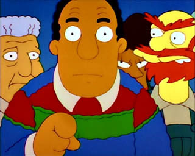

OpenVis Conf 2015
The highlights
Presented by Cristen Jones / MITRE
Perception
Weber's Law
ΔP = k * ΔI/I
The Future
“Our innate perceptual and cognitive abilities should become an integral part of the next generation of visualization systems.”
Explain a process
Explain a concept

Why are loops effective?
- Exposure effect
- Expectation
- Shifting attention
- Transformation
More on storytelling

Zeigarnik effect
This is why cliffhangers work.

Make the audience feel.

I hope you're aware that you invited the person whose work Tufte called chartjunk.
Context matters

[This particular audience] is sitting on a plane, flicking through a magazine. I had to appeal to them, quickly.
"Now I see it!"
An inconsistent metaphor?
moving text model |
moving window model |
The 12 principles
https://github.com/tweenjs/tween.js
http://jonobr1.github.io/two.js/
Color Cube
Interactive Datavis is Hard

Data Visualization on a Deadline
Pre-prepare parts
- Boilerplate README
- Style guide
- Virtual environments
- Apple scripts
- App Template
Real Data
Know No Data
// no data might be..
null
undefined
NaN
""
"NULL"
-9999
// &c. &c.